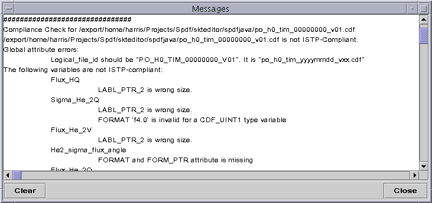
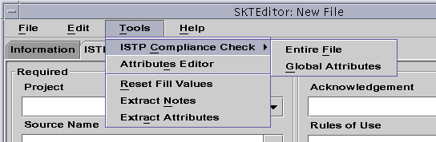
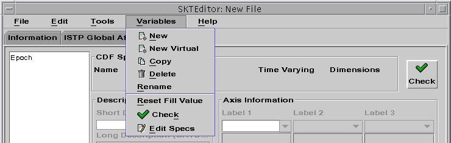

SPDF/ISTP Compliance
Introduction
This application's primary purpose is to facilitate the construction of
skeleton CDF files that conform to the Space Physics Data Facility
Guidelines for CDF (see https://spdf.gsfc.nasa.gov/sp_use_of_cdf.html).
The application may be used to create new skeleton CDF files or it may
be used to edit existing files. While the application encourages
the user to create fully compliant files, it does allow non-compliant files
to be saved. During editing of a file, the file will necessarily
be non-compliant at times. Therefore, the user is partially responsible
for initiating compliance checks at appropriate and convenient times during
their editing session. The application automatically performs certain
compliance checks when opening an existing file. An automatic variable
compliance check is also performed each time the user selects a different
variable on the Variable panel. There are three levels
of compliance checks that a user may initiate. Each of these is described
below. For all compliance checking operations, diagnostic messages
concerning compliance are desplayed in the Messages window
which is displayed by selecting the Show Messages button
at the bottom righthand corner of the editor window.

Global Attributes
The SPDF/ISTP Guidelines
(see https://spdf.gsfc.nasa.gov/istp_guide/gattributes.html)
specify global attributes that should be defined. Compliance with
the guideline's required global attributes may be check independently of
other aspects of compliance.
To check the compliance of the global attributes
-
Choose ISTP Compliance Check/Global Attributes from the
Tools menu

Variable
The SPDF/ISTP Guidelines
(see https://spdf.gsfc.nasa.gov/istp_guide/variables.html)
specify many details of how variables and their attributes should be defined.
The compliance of an individual variable's definition may be check independently
of other aspects of compliance.
To check the compliance of a single variable definition
-
Select the variable from the list of variables on Variables
panel
-
Choose Check from the Variables menu or
select the Check button in the upper right hand corner
of the Variables panel

File
The Space Physics Guideline for CDF
(see https://spdf.gsfc.nasa.gov/sp_use_of_cdf.html)
compliance of the entire file (both global attributes and all variable
definitions) may be check in a single operation.
To check the compliance of the entire file
-
Choose ISTP Compliance Check/Entire File from the Tools
menu
See also: